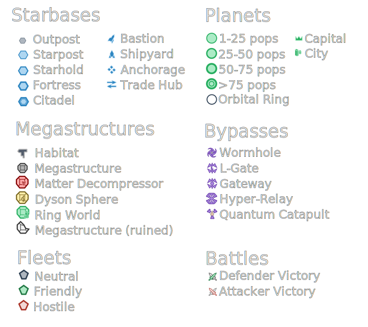

Note: SGM will draw all empires regardless of your intel on them. Use with caution if you do not want to break game immersion.

What Stellaris Galaxy Map does?
Stellaris Galaxy Map is an online service which draws galaxy maps in SVG format from save files from a Stellaris grand strategy game.
Where do I get my save files?
Check out Save-game Editing on a Stellaris wiki.
What is SVG?
SVG stands for Scalable Vector Graphics. It is a file format which is used in Internet for representing images that need to be scaled without scaling artifacts (like maps). It is supported by major browsers and can be edited with any vector graphics editor such as Inkscape.
Can SGM be run in standalone mode?
Yes, but you will need to download sources from
GitHub
and run stellaris-galaxy-map-cli manually.
